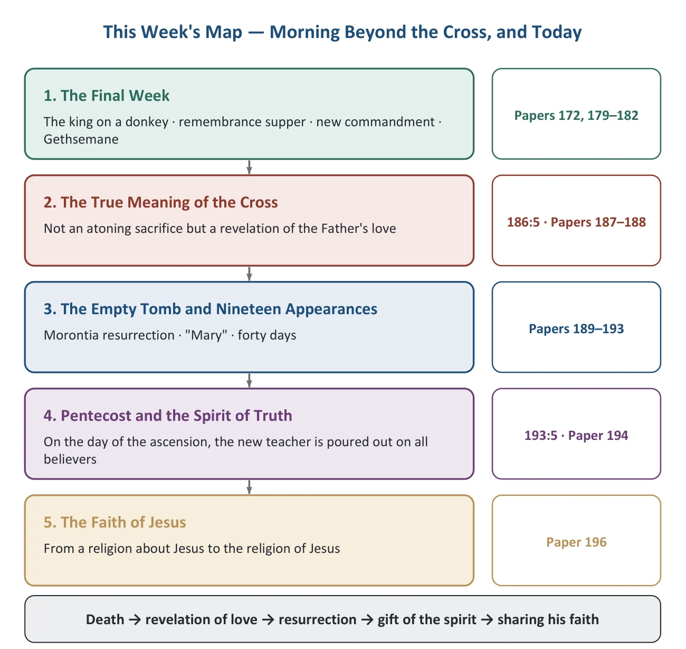
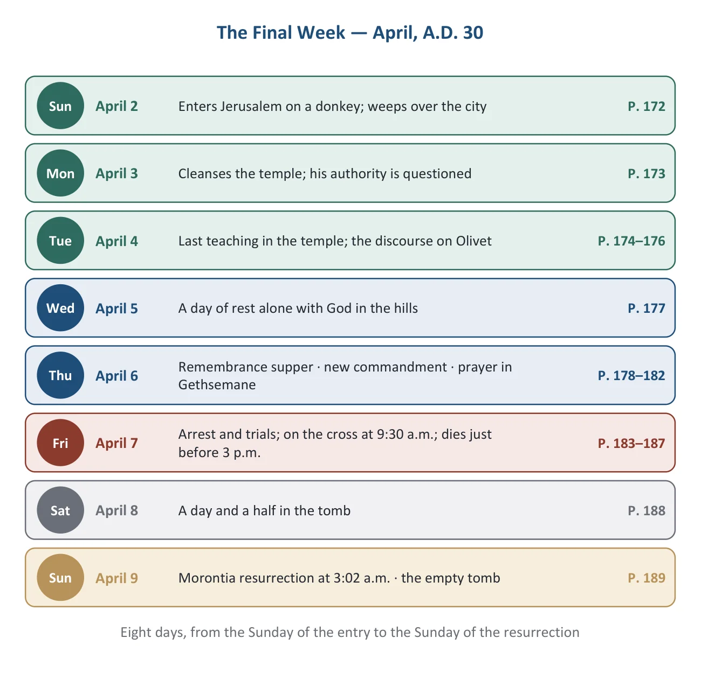
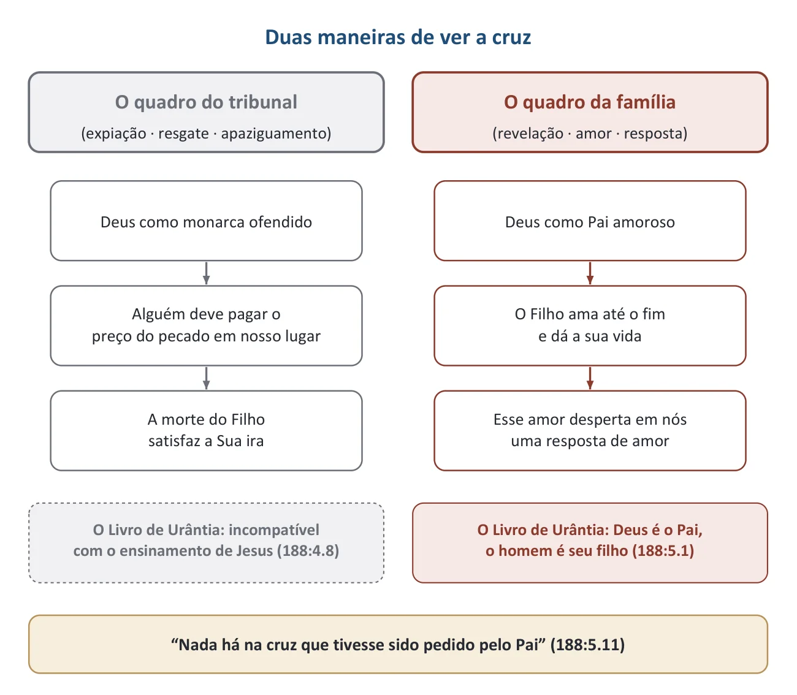
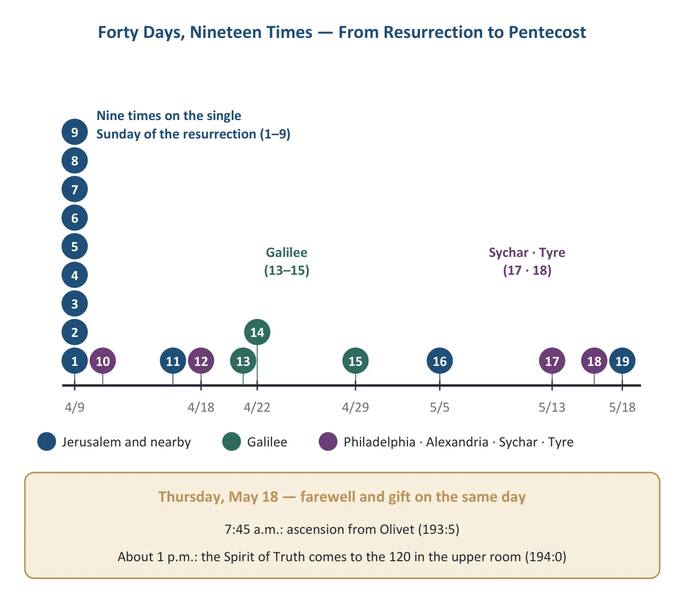
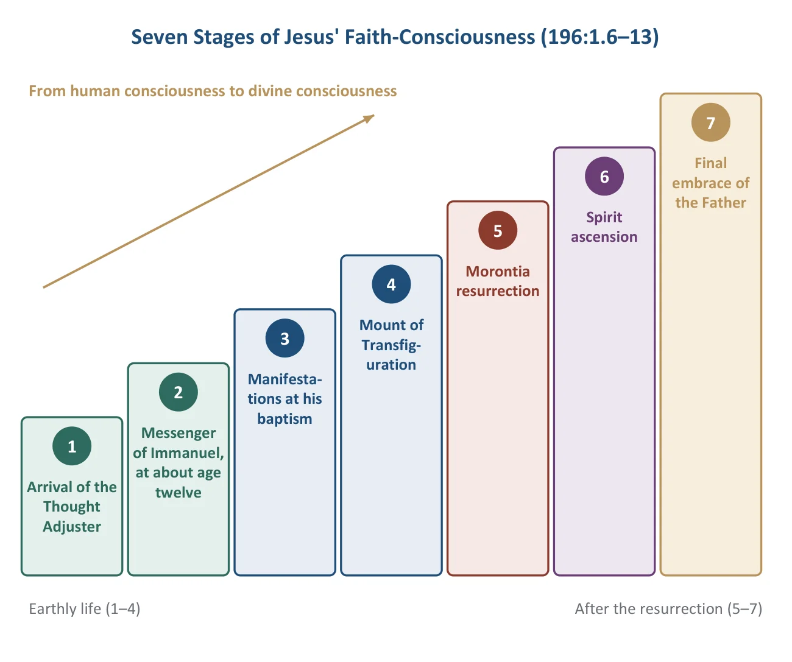

Leitura: Documento 172:3 · Documentos 179–182 · Documento 186:5 · Documentos 187–188 · Documentos 189–194 · Documento 196:0–2

Esta semana lemos o último capítulo da vida de Jesus na Terra. Uma única semana contém tudo: o domingo em que ele entrou em Jerusalém montado num jumento, a ceia no cenáculo, a prece no Getsêmane, a cruz na sexta-feira e o sepulcro vazio antes do amanhecer de domingo. O Livro de Urântia lê a cruz não como uma oferta que acalma a ira de Deus, mas como uma revelação do amor do Pai, e explica a ressurreição não como a reanimação de um cadáver, mas como uma ressurreição moroncial. Depois das dezenove aparições, da ascensão e da efusão do Espírito da Verdade em Pentecostes, o livro termina convidando o leitor para a religião de Jesus, e não para uma religião sobre Jesus — uma vida que partilha a sua própria fé.
Quando examinamos um velho maço de cartas, muitas vezes é a última que fica conosco por mais tempo. Anos de notícias e sentimentos parecem se reunir naquela única página, e nas suas linhas finais descobrimos o que o autor mais estimava.
Os últimos documentos, pouco mais de uma dúzia, da Quarta parte de O Livro de Urântia são uma carta desse tipo. Os trinta e poucos anos que acompanhamos na semana passada se concentram numa única semana. Jesus partilha uma última refeição com os amigos, ora sozinho, é levado a julgamento e morre numa cruz. Então, na manhã do terceiro dia, a história não termina; ela recomeça.
Esta é também a última semana deste guia. Ao longo de doze semanas, partimos do centro do universo, passamos pelo universo local e descemos até este pequeno planeta. Agora assistimos ao fim da vida que o Criador desse universo viveu como homem, e perguntamos o que essa vida deixou para nós hoje.
No domingo, 2 de abril do ano 30 d.C., Jesus deixou Betânia rumo a Jerusalém. Ele sempre havia contido as multidões que queriam aclamá-lo como Messias, mas desta vez escolheu entrar na cidade abertamente.
Jesus não se decidiu por fazer essa entrada pública em Jerusalém como um último apelo ao favorecimento popular, nem como uma tentativa final de obter o poder. Nem o fez, de todo, para satisfazer às aspirações humanas dos seus discípulos e apóstolos. Jesus não abrigava nenhuma das ilusões de um sonhador fantasioso; ele sabia muito bem qual seria o desenlace dessa visita.172:3.3
Ele escolheu com cuidado a maneira da sua chegada.
Um rei guerreiro sempre entraria em uma cidade montado em um cavalo; um rei, em uma missão de paz e de amizade, sempre entraria montado em um asno. Jesus não queria entrar em Jerusalém como um homem montado em um cavalo, mas queria entrar pacificamente e com boa vontade, montado em um jumento, como o Filho do Homem.172:3.5
O povo esperava um libertador que expulsasse Roma. Ao escolher um jumento em vez de um cavalo, Jesus mostrou na própria pessoa que o seu reino não era um reino da espada. Quando a multidão que o aclamava chegou ao topo do monte das Oliveiras, ele parou e chorou.
Baixando o olhar sobre a vasta multidão que vinha da cidade para saudá-lo, o Mestre, com muita emoção e com uma voz chorosa, disse: “Ó Jerusalém, se tivesses apenas sabido, tu também, ao menos neste teu dia, as coisas que pertencem à tua paz, e que tu poderias tão livremente ter tido! Mas agora essas glórias estão a ponto de serem ocultadas dos teus olhos. Tu estás a ponto de rejeitar o Filho da paz e dar as tuas costas ao evangelho da salvação.172:3.10
As boas-vindas foram ruidosas, mas o livro diz que as suas raízes eram rasas.
Essas boas-vindas, embora tenham sido alegres e sinceras, não indicavam qualquer convicção verdadeira ou profunda nos corações dessa multidão festiva.172:3.15
Cada dia da semana que se seguiu foi mais pesado. Na segunda-feira, ele purificou o templo e, na terça-feira, ensinou ali pela última vez. Na quarta-feira, descansou sozinho nas colinas e, na quinta-feira à noite, partilhou a última ceia no cenáculo.

Na quinta-feira à noite, no cenáculo, Jesus passou o pão e o cálice aos onze apóstolos e instituiu a “ceia da lembrança”, o rito que mais tarde se tornou a comunhão da igreja. O livro explica o seu significado assim.
A ceia da lembrança é um encontro simbólico do crente com Michael. Quando vós vos tornais assim conscientes do espírito, o Filho está realmente presente, e o seu espírito confraterniza-se com o fragmento residente do seu Pai.179:5.6
O que importa é menos a forma do pão e do cálice do que uma mente desperta para a presença dele. Jesus tinha uma razão para usar símbolos em vez de uma fórmula precisa.
Desse modo ele buscou impedir gerações sucessivas de cristalizarem o seu ensinamento e de ligarem os seus significados espirituais às correntes mortas da tradição pelo dogma.179:5.4
Depois da ceia, ele lhes deixou uma última incumbência.
E assim vos dou este novo mandamento: Amai uns aos outros como eu vos amei. E amando, assim, uns aos outros, todos os homens saberão que sois meus discípulos.180:1.1
O antigo mandamento dizia para amar o próximo como a si mesmo. O novo muda a medida: amar como Jesus amou. A mesma seção acrescenta que esse amor não é um dever pesado.
Tende sempre em mente: É a lealdade, não o sacrifício, que Jesus pede. … O impulso da amizade transcende todas as convicções do dever, e o serviço de um amigo para um amigo nunca pode ser chamado de sacrifício.180:1.6
Naquela noite, ao pé do monte das Oliveiras, Jesus se prostrou para orar três vezes. Pediu que o cálice passasse, mas no fim escolheu a vontade do Pai.
A cada vez que ele fazia uma prece no jardim, a sua humanidade agarrava-se à sua divindade com a mão sempre mais forte da fé; a sua vontade humana tornava-se mais completamente una com a vontade divina do seu Pai.182:3.6
Nesta cena, Jesus não parece um super-homem. Ele sua e deseja que os amigos vigiem com ele. Contudo, o coração deste homem se agarra pela fé à vontade do Pai.
Antes da chegada de Judas e dos soldados, o Mestre já havia recuperado o seu equilíbrio costumeiro; o espírito havia triunfado sobre a carne; e a fé havia-se afirmado acima de todas as tendências humanas de temer ou de nutrir dúvidas. A provação suprema da compreensão plena da natureza humana havia sido enfrentada e superada de modo aceitável.182:3.11
A calma que ele mostrou no dia seguinte foi conquistada nesta noite.
Cedo, na sexta-feira, Jesus compareceu diante de Pilatos e, por volta das nove e meia da manhã, foi pregado numa cruz no Gólgota, entre dois ladrões. Pouco antes das três da tarde, ele exclamou: “Está acabado”, e deu o último suspiro. O livro resume essa morte com estas palavras.
Jesus morreu com nobreza — como tinha vivido. Ele admitiu sem reservas a sua realeza e permaneceu senhor da situação durante todo esse trágico dia. … Depois de uma vida assim — e de uma tal morte — o Mestre poderia apenas dizer: “Está acabado”.187:5.6
Seria essa morte, então, algo que Deus havia planejado? Muitas pessoas aprenderam assim. O Livro de Urântia responde claramente que não.
Foi o homem, e não Deus, que planejou e executou a morte de Jesus na cruz. … Tudo isso foi um feito do homem, não de Deus.186:5.2
O Pai no céu amava os homens mortais na Terra antes da vida e da morte de Jesus, em Urântia, tanto quanto ele ama depois dessa demonstração transcendental de co-participação entre o homem e Deus.186:5.6
A tradição da igreja fala muitas vezes de “expiação substitutiva”. Segundo essa visão, o pecado humano deixou Deus irado, alguém tinha de suportar a pena no nosso lugar para que o perdão fosse possível, e Jesus pagou esse preço. O documento 188 trata diretamente desse quadro.
Embora não haja sido para expiar uma culpa racial, a qual o homem mortal de fato não tem, que Jesus passou pela morte na cruz; nem para providenciar nenhuma espécie de aproximação efetiva a um Deus de algum modo ofendido e implacável; e embora o Filho do Homem não tenha oferecido a si próprio em sacrifício para apaziguar a ira de Deus, e abrir o caminho para que o homem pecador obtivesse a salvação …188:4.1
A razão está em quem Deus é. Como vimos na semana 2, Deus é, acima de tudo, um Pai. A imagem de um monarca que só se satisfaz depois que uma pena foi paga não combina com o Pai que Jesus revelou.
Toda a idéia da redenção e da expiação é incompatível com o conceito de Deus, do modo como foi ensinado e exemplificado por Jesus de Nazaré. O amor infinito de Deus não é secundário a nada na natureza divina.188:4.8
Isso não quer dizer que Jesus nada tenha a ver com a salvação. O livro simplesmente sugere um nome melhor para ele.
Embora muito dificilmente seja adequado falar de Jesus como alguém que se tenha sacrificado, como o resgatador ou redentor, é totalmente correto referir-se a ele como um salvador. Para sempre ele deixou o caminho da salvação (da sobrevivência) mais claro e certo …188:4.7
O que importa, acrescenta o livro, não é a morte em si, mas o modo como ele a enfrentou.
A grande coisa sobre a morte de Jesus, no que se relaciona ao enriquecimento da experiência humana e à ampliação do caminho da salvação, não é o fato da sua morte, mas antes a maneira magnífica e o espírito sem par com o qual ele enfrentou a morte.188:4.12
O que é, então, a cruz? A seção 5 do documento 188 nos ajuda a ver o mesmo acontecimento com outros olhos.
A cruz de Jesus representa a medida plena da devoção suprema do verdadeiro pastor, até mesmo pelos membros indignos do seu rebanho. Ela coloca, para sempre, todas as relações entre Deus e o homem na base da família. Deus é o Pai; o homem é o Seu filho.188:5.1
A imagem de um tribunal dá lugar à imagem de uma família. Um pai não cobra pagamento do seu filho. A cruz não é um lugar onde se quita uma dívida, mas um lugar onde o amor se mostra indo até o fim.
Jesus tanto ama os homens, que o seu amor desperta uma resposta de amor no coração humano. O amor é verdadeiramente contagioso e eternamente criativo. A morte de Jesus na cruz exemplifica um amor suficientemente forte e divino para perdoar o pecado e para absorver toda a maldade.188:5.2
Vede na morte do Filho do Homem o auge do desdobramento do amor divino do Pai pelos Seus filhos das esferas mortais. A cruz assim retrata a devoção da vontade afetuosa e a concessão da salvação voluntária àqueles que estão dispostos, por ato de vontade, a receber tais dádivas e tal devoção. Nada há na cruz que tivesse sido pedido pelo Pai — apenas tudo aquilo que Jesus deu, com toda a disposição da sua vontade, e aquilo que se recusou a evitar.188:5.11
A cruz é aquele símbolo elevado do serviço sagrado, da devoção da vida de uma pessoa ao bem-estar e à salvação do semelhante. A cruz não é o símbolo do sacrifício do Filho de Deus inocente no lugar dos pecadores culpados, feito para apaziguar a ira de um Deus ofendido. A cruz, ao contrário, permanece para sempre, na Terra e em todo um vasto universo, como um símbolo sagrado dos bons doando a si próprios aos maus e com isso salvando-os por meio dessa mesma devoção de amor.188:5.9
A cruz é também um consolo para os que sofrem, porque o próprio Criador passou pela dor humana.
Nenhum homem jamais pode temer que o Criador desconheça a natureza ou a extensão das aflições temporais próprias dele.188:5.12
O livro reúne a seção inteira numa única frase.
Sabemos que a morte na cruz não existiu para efetivar a reconciliação do homem com Deus, mas sim para estimular o entendimento que o homem pode ter do amor eterno do Pai e da misericórdia sem fim do seu Filho; e para difundir essas verdades universais a um universo inteiro.188:5.13

Um mal-entendido comum: Deus estava irado com o pecado e só perdoa as pessoas depois de receber o sangue do Seu Filho. Ou, ao contrário: como O Livro de Urântia rejeita a doutrina da expiação, a cruz foi um acidente sem sentido. O que O Livro de Urântia diz: Foi o homem que planejou a cruz (186:5.2), e o Pai nada exigiu (188:5.11). Deus amava as pessoas tanto quanto antes da vida de Jesus (186:5.6). Mesmo assim, a cruz tem um grande significado. Ela é uma revelação, a todo o universo, do amor do Pai e da misericórdia do Filho, e Jesus é verdadeiramente um salvador (188:4.7).
Jesus disse: “Ninguém tem maior amor do que este: de dar alguém a sua vida pelos seus amigos” (João 15:13). O documento 188 vai um passo além: Jesus tinha um amor disposto a dar a vida até pelos seus inimigos (188:5.7). A confissão “Deus é caridade” (1 João 4:8) também se encontra com a leitura que este livro faz da cruz como uma revelação do amor. Onde a Epístola aos Hebreus explica a cruz na linguagem do sacrifício sacerdotal, porém, este livro oferece uma interpretação diferente.
Às três horas e dois minutos da madrugada de domingo, Jesus se levantou do sepulcro. Contudo, a ressurreição que o livro descreve não é um corpo morto voltando a respirar. Jesus ressuscitou numa forma “moroncial”, um corpo intermediário, nem material nem espiritual — exatamente o tipo de corpo que as pessoas usam quando despertam, depois da morte, nos mundos das mansões que conhecemos na semana 6.
3. Ele saiu do sepulcro de José na forma semelhante das personalidades moronciais daqueles que, como os seres moronciais ascendentes ressuscitados, emergem nas salas de ressurreição do primeiro mundo das mansões deste sistema local de Satânia.189:1.9
Por que, então, o sepulcro estava vazio? O corpo físico de Jesus não foi usado na ressurreição.
A crença cristã na ressurreição de Jesus tem sido baseada no fato do “sepulcro vazio”. Foi real e verdadeiramente um fato que o sepulcro estivesse vazio, mas essa não é a verdade da ressurreição.189:2.6
O sepulcro de José estava vazio, não porque o corpo de Jesus haja se recuperado ou ressuscitado, mas porque as hostes celestes tiveram o seu pedido concedido, o pedido de dar a ele uma dissolução especial e única …189:2.7
O sepulcro vazio não é a prova da ressurreição, mas um fato que veio junto com ela. A verdadeira evidência é a experiência dos que se encontraram com o Mestre vivo. Esse relato não diminui a ressurreição; ao contrário, liga-a ao futuro de cada um de nós.
Todo esse poder que é inerente a Jesus — o dom da vida — , e o capacitou a ressuscitar dos mortos; é a dádiva mesma da vida eterna que ele outorga aos crentes dos reinos e que assegura, ainda agora, a sua ressurreição dos vínculos da morte natural.190:0.2
Os mortais dos reinos levantar-se-ão na manhã da ressurreição com o mesmo tipo de corpo de transição, ou moroncial, que Jesus teve quando se levantou da tumba naquela manhã de domingo. Esses corpos não têm sangue circulando, e tais seres não se servem de alimentos materiais comuns; contudo, essas formas moronciais são reais.190:0.3
As primeiras testemunhas foram cinco mulheres que tinham ido ao sepulcro. Maria Madalena tomou o estranho pelo jardineiro e perguntou para onde ele havia levado o corpo do Mestre.
E enquanto elas pesavam as suas palavras, ele dirigiu-se a Madalena com uma voz familiar, dizendo: “Maria”. E quando então ouviu essa palavra, dita com uma compaixão tão bem conhecida e em saudação afetuosa, ela soube que era a voz do Mestre; e, correndo, ajoelhou-se aos seus pés, ao mesmo tempo em que exclamava: “Meu Senhor, e meu Mestre!”189:4.10
A forma dele havia mudado, mas a voz que a chamou pelo nome era a mesma. Jesus ressuscitado foi primeiro aos que choravam. Mulheres e crentes comuns partiram com a notícia antes dos apóstolos que duvidavam. No fim, a evidência da ressurreição foram encontros como esses.
As verdadeiras evidências da ressurreição de Michael são espirituais, pela sua natureza, ainda que esse ensinamento seja corroborado pelo testemunho de muitos mortais do reino, que se encontraram, reconheceram e comungaram com o Mestre ressuscitado na forma moroncial. Ele tornou-se parte da experiência pessoal de quase mil seres humanos, antes de finalmente deixar Urântia.189:2.9
Nos quarenta dias seguintes, Jesus apareceu em muitos lugares a muitos grupos.
Da época da ressurreição moroncial até a hora da sua ascensão espiritual às alturas, Jesus fez dezenove aparições isoladas, na forma visível, para os seus crentes na Terra. Ele não apareceu para os seus inimigos, nem para aqueles que não poderiam fazer um uso espiritual da sua manifestação na forma visível.190:2.1
Algumas coisas se destacam na lista. Ele apareceu não só em Jerusalém, mas na Galiléia, em Sicar, na Samaria, em Tiro, na Fenícia, e até em lugares tão distantes como Filadélfia e Alexandria. Apareceu não só aos apóstolos, mas a mulheres, à sua família, a gregos e a samaritanos. Desde o início, a notícia da ressurreição atravessou as fronteiras de um único povo.
| N.º | Quando | Onde | A quem |
|---|---|---|---|
| 1, 2 | 9 de abril, antes do amanhecer | Sepulcro de José | As cinco mulheres; Maria Madalena |
| 3, 4 | Mesmo dia, ao meio-dia | Betânia | Seu irmão Tiago; sua família terrena |
| 5, 6 | Mesmo dia, à tarde | Jerusalém | Cerca de 25 mulheres crentes; cerca de 40 gregos |
| 7 | Mesmo dia, ao anoitecer | Caminho de Emaús | Os irmãos Cleofas e Jacó |
| 8, 9 | Mesma noite | Casa de Marcos | Pedro; os dez apóstolos |
| 10 | 11 de abril | Filadélfia | Abner e Lázaro, com cerca de 150 outros |
| 11 | Por volta de 16 de abril | Casa de Marcos | Os onze apóstolos, com Tomé |
| 12 | 18 de abril | Alexandria | Rodam e cerca de 80 outros |
| 13–15 | Fim de abril | Galiléia | Dez apóstolos; onze apóstolos; mais de 500 crentes |
| 16 | 5 de maio | Pátio de Nicodemos | Crentes em Jerusalém |
| 17, 18 | 13 e 16 de maio | Sicar; Tiro | Crentes na Samaria e na Fenícia |
| 19 | 18 de maio | Do cenáculo ao monte das Oliveiras | Os onze apóstolos — a ascensão |
Na manhã da quinta-feira, 18 de maio, Jesus estava com os onze apóstolos na encosta do monte das Oliveiras. Quando eles, por iniciativa própria, se ajoelharam em círculo ao seu redor, ele pronunciou as suas últimas palavras.
Amai aos homens com o amor com o qual eu vos amei, e servi aos semelhantes mortais como eu servi a vós. … O meu amor vos abriga, o meu espírito residirá convosco e a minha paz habitará em vós. Adeus193:5.2
Depois que o Mestre moroncial assim falou, ele desapareceu da vista de todos. Essa assim chamada ascensão de Jesus não foi de nenhum modo diferente dos seus outros desaparecimentos da vista mortal, durante os quarenta dias da sua carreira moroncial em Urântia.193:5.3
O livro não dramatiza a ascensão. O notável aconteceu naquela tarde. No mesmo dia da ascensão, o espírito prometido veio sobre os cento e vinte reunidos no cenáculo, em Jerusalém.
POR VOLTA de uma hora, no início da tarde e no momento em que cerca de cento e vinte crentes estavam empenhados na oração, todos se aperceberam de uma estranha presença na sala. Ao mesmo tempo os discípulos tornaram-se todos conscientes de uma sensação nova e profunda de alegria espiritual, de segurança e de confiança.194:0.1

O livro chama esse espírito de Espírito da Verdade, ou o “novo mestre”. É o mesmo espírito cujo nome apenas vislumbramos na semana 1. O que faz o Espírito da Verdade?
A primeira missão desse espírito é, está claro, fomentar e personalizar a verdade, pois é a compreensão da verdade que constitui a mais elevada forma de liberdade humana. Em seguida, o propósito desse espírito é destruir o sentimento de orfandade do crente.194:2.2
O Espírito da Verdade não se anuncia por meio de experiências dramáticas.
O espírito nunca gera uma consciência de si mesmo, mas cria uma consciência de Michael, o Filho. … A prova, entretanto, do vosso envolvimento com o Espírito da Verdade, não há de ser encontrada na vossa consciência desse espírito, mas, muito mais intensamente, na vossa experiência de uma irmandade mais elevada com Michael.194:2.4
O sinal da presença do espírito não é um sentimento misterioso, mas conhecer Jesus mais de perto. Esse espírito também não veio só para os apóstolos ou para alguns poucos escolhidos.
essa dádiva do espírito não veio apenas para os apóstolos. Todos os cento e vinte homens e mulheres reunidos na sala superior receberam o novo mestre, como o receberam todos os homens honestos de coração em todo o mundo. … Afinal, a verdadeira religião libera-se da custódia dos sacerdotes e de todas as castas sagradas e encontra sua manifestação real nas almas individuais dos homens.194:3.6
Em Pentecostes, mulheres e homens, a família de Jesus e os discípulos comuns, todos receberam a mesma dádiva. Não foi preciso nenhum lugar ou cerimônia especial.
Quando o espírito veio sobre as pessoas reunidas no salão superior, elas estavam simplesmente sentadas lá, tendo acabado de orar em silêncio. … Para todo o sempre, Pentecostes desligou a experiência espiritual da noção de que houvesse locais especialmente favorecidos.194:3.10
A vinda do Espírito da Verdade purifica o coração humano e conduz a pessoa, que o recebe, a formular um único propósito de vida, na vontade de Deus e para o bem-estar dos homens. … Pentecostes, então e agora, significa que o Jesus da história tornou-se o Filho divino da experiência vivente.194:3.19
O livro descreve com estas palavras o que Pentecostes mudou.
Até Pentecostes, a religião havia revelado apenas o homem à procura de Deus; desde Pentecostes, permanece o homem na busca de Deus, mas brilha sobre o mundo o espetáculo de Deus, que também busca o homem e que, tão logo o tenha achado, envia o Seu espírito para residir dentro dele.194:3.13
Esse espírito não leva as pessoas a fugir da vida; ele as manda de volta para o meio dela. O próprio Jesus viveu assim.
Jesus aceitou a vida, em toda a sua realidade terrível, com mestria — até mesmo na morte. Ele não usou a religião como uma liberação para a vida.194:3.3
O quadro da religião evolucionária e da religião revelada que vimos na semana 1 se completa aqui. A mão que se estende de baixo e a mão que se estende do alto se encontram dentro do coração humano. Junto com o Ajustador do Pensamento da semana 10 e o Espírito Santo do Espírito Materno do Universo, o Espírito da Verdade forma a tríplice dádiva de espírito que atua dentro de nós.
Cheios da alegria de Pentecostes, os apóstolos saíram às ruas para pregar. Mas o que proclamaram? O documento 194 faz uma observação discreta, mas de peso. Em vez do evangelho que Jesus havia ensinado, eles começaram a pregar fatos sobre Jesus, sobretudo a ressurreição.
O evangelho do Reino de Deus é: o fato da paternidade de Deus, combinado com a verdade resultante da filiação-irmandade dos homens. O cristianismo, como se desenvolveu a partir desse dia, é: o fato de Deus, enquanto Pai do Senhor Jesus Cristo, em associação com a experiência da crença-comunhão com o Cristo ressuscitado e glorificado.194:0.4
Jesus proclamou que Deus é Pai e que todas as pessoas são irmãos e irmãs. Os apóstolos proclamaram que Jesus havia ressuscitado. As duas coisas são preciosas, mas não são a mesma coisa. A primeira é a fé pela qual o próprio Jesus viveu; a segunda é a crença na pessoa de Jesus. O documento 196 expressa a diferença assim.
Vós podeis pregar uma religião sobre Jesus, mas, por força, vós deveis viver a religião de Jesus. No entusiasmo de Pentecostes, Pedro inaugurou involuntariamente uma nova religião, a religião do Cristo ressuscitado e glorificado.196:2.1
Jesus fundou a religião da experiência pessoal, ao fazer a vontade de Deus e ao servir à irmandade humana; Paulo fundou uma religião na qual o Jesus glorificado tornou-se o objeto da adoração, e a irmandade consistiu nos irmãos que eram crentes do Cristo divino.196:2.6
| Ponto de comparação | A religião de Jesus | A religião sobre Jesus |
|---|---|---|
| Centro | A paternidade de Deus, a irmandade dos homens | O Cristo ressuscitado e glorificado |
| Fundamento | A experiência religiosa pessoal do Jesus da Galiléia | A experiência religiosa dos apóstolos, especialmente de Paulo |
| Lugar de Jesus | Exemplo e caminho de fé | Objeto de adoração |
| O que significa segui-lo | Partilhar a sua fé | Crer em doutrinas sobre ele |
| Fruto | Fazer a vontade do Pai e servir aos outros | A comunhão dos crentes e a igreja |
Onde começa a religião de Jesus? A abertura do documento 196 retrata a própria fé de Jesus.
JESUS possuía uma fé sublime, e de todo o coração, em Deus. Ele experimentou os altos e baixos comuns da existência mortal, mas religiosamente nunca duvidou da certeza da vigilância e do guiamento de Deus. … A sua fé não era nem tradicional nem meramente intelectual; era totalmente pessoal e puramente espiritual.196:0.1
Essa fé se parecia com o coração de uma criança.
Jesus confiou em Deus, do mesmo modo que uma criança confia em um pai. Ele tinha uma profunda confiança no universo — exatamente a confiança que uma criança tem no ambiente dos seus pais.196:0.11
Contudo, nunca foi infantil. E Jesus não guardou essa fé para si.
Jesus não exige que os seus discípulos acreditem nele, mas que eles acreditem junto com ele, que acreditem na realidade do amor de Deus e, com toda a confiança, que aceitem a certeza da segurança da filiação ao Pai celeste.196:0.13
A diferença entre “acreditar em Jesus” e “acreditar junto com Jesus” é a chave desta semana. No primeiro caso, Jesus se torna alguém para quem olhamos; no segundo, ele se torna um irmão mais velho que caminha ao nosso lado. O documento 196 insiste repetidas vezes que o Jesus humano não seja perdido.
Não importa quão grande seja o fato da soberania de Michael, vós não deveis privar os homens do Jesus humano. O Mestre ascendeu ao alto como um homem, tanto quanto um Deus; ele pertence aos homens; e os homens pertencem a ele.196:1.1
Os tempos amadureceram o suficiente, a ponto de se poder constatar a ressurreição simbólica do Jesus humano, saindo do seu túmulo, dentre as tradições teológicas e os dogmas religiosos de dezenove séculos.196:1.2
Há, portanto, mais um túmulo nesta semana. O que significa, então, segui-lo?
Não deveria ser a meta dos crentes do Reino imitar literalmente os aspectos exteriores da vida de Jesus na carne, mas sim compartilhar a sua fé; confiar em Deus como ele confiou em Deus e acreditar nos homens como ele acreditou nos homens.196:1.5
Não é um caminho fácil. Não foi fácil nem mesmo para Jesus.
Foi necessária uma vontade forte e uma confiança firme para acreditar no que Jesus acreditava, e como ele acreditava.196:0.14
Não é preciso tornar-se carpinteiro nem andar pelas estradas da Galiléia. Basta viver cada dia, onde quer que estejamos, com a confiança que ele tinha no Pai, e olhar para o nosso próximo com os olhos que viam cada pessoa como preciosa. O livro chama isso de o conhecimento mais valioso de todos.
De todo o conhecimento humano, o que é de maior valor é poder conhecer a vida religiosa de Jesus e como ele viveu-a.196:1.3

A última seção do último documento de O Livro de Urântia termina com o ponto a que o pensamento humano sobre Deus finalmente chega. A nossa jornada de doze semanas também chega aqui ao seu repouso.
O Pai é amor vivo, e a vida do Pai está nos seus Filhos. E o espírito do Pai está nos filhos dos seus Filhos — os homens mortais. Quando tudo estiver dito e feito, a idéia de um Pai será ainda o conceito humano mais elevado de Deus.196:3.35
Na primeira semana, desdobramos um mapa de rotas. Todas as linhas desse mapa levam, por fim, a uma única estação: o Pai que nos ama e o único homem que viveu esse amor até o fim. Depois que o livro é fechado, resta uma pergunta — se vamos partilhar a fé dele hoje, em nossa própria vida.
Um mal-entendido comum: Por destacar “a religião de Jesus”, O Livro de Urântia vê Jesus apenas como um bom mestre humano. O que O Livro de Urântia diz: O livro chama de “o grande erro” conceber Jesus como inteiramente humano ou apenas como divino (196:2.3). Ele é verdadeiramente homem e verdadeiramente Deus. A questão é que, ao exaltar o Cristo divino, não devemos perder o homem Jesus da Galiléia, que lutou pela fé (196:1.1–2).